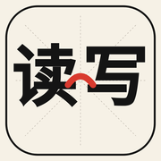
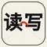
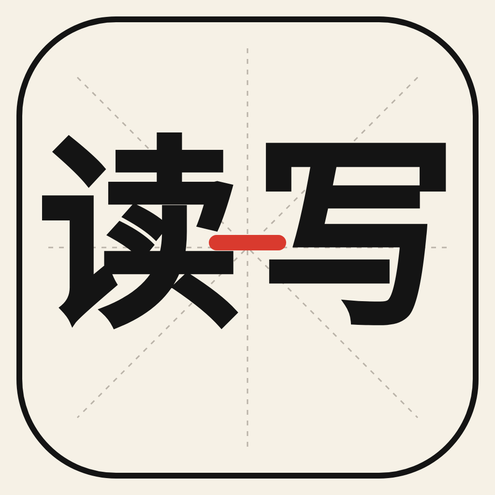
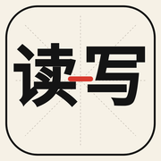
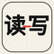
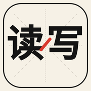
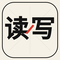

v3 · 2026-06-06 · 「读 [X] 写」 wordmark 结构，差异在朱砂红连接元素
朱砂红阳平声调弧线居中。象征"读"的声音上扬。最有汉字学习产品味道。


朱砂红短横线居中。隐喻"读 = 写"打通。最克制，最稳。



朱砂红斜杠运笔。呼应旧 C 方向"右上斜杠"语言。最现代、动感。


回复 1.1 / 1.2 / 1.3 锁定方向。锁定后我会：
① 加入纸张肌理 / 墨迹质感（增强东方汉字工具感）
② 导出 13 尺寸完整 iOS AppIcon.appiconset
③ 替换主页面 prototype 顶部的占位 logo
④ 把锁定方向写入 BRAND-DECISION.md
也可以回复修改建议，例如：「1.2 但红线再粗一点」「1.1 但声调换成第三声」「米字格再深一点」。
v3 修复 vision QA 提出的：字体衬线生效（Linux Chrome 用裸 serif）、连接元素居中、米字格加深、外框圆角加大。